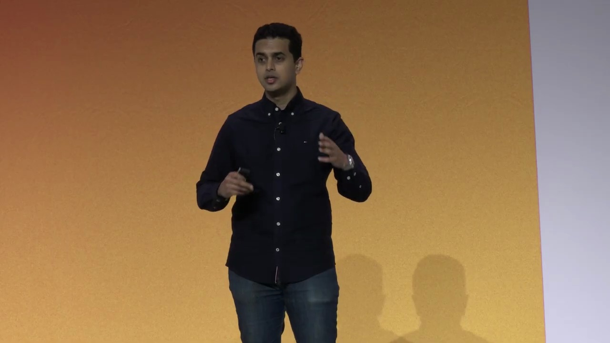
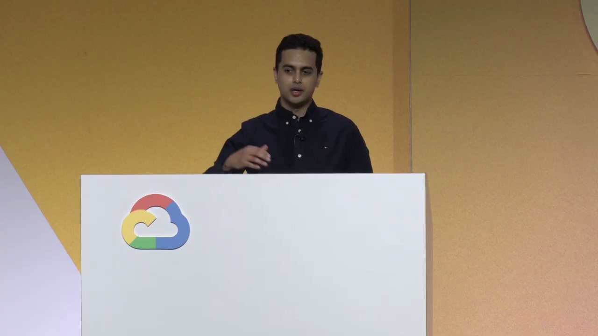
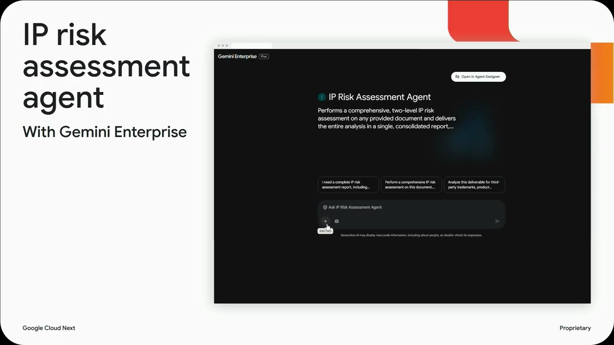

Key Moments





Summary & Script
What's new with Gemini Enterprise app
Source: https://youtu.be/Tc3IiGNmXHc
Video ID: Tc3IiGNmXHc
Gemini Enterprise – Product & Platform Update (Next 2024)
Video: Google Cloud Next – Gemini Enterprise announcements
Presenter: Jamie Deggeer, Product Leader, Google Cloud AI
Panelists: Dave Teggart (Engineering Lead, Gemini Enterprise), Aaron Purcell (MD, Digital Innovation, KPMG), Lisa Nabb (Head of Agentic Use‑Case Management, Signal Iduna)
1️⃣ Overview
Google unveiled the Gemini Enterprise Agent Platform and a suite of new application‑level features that turn every employee into a creator and consumer of AI agents.
- Gemini Enterprise is the “front‑door” for AI in the workplace: a cloud‑first, enterprise‑grade hub that connects AI models, enterprise data, and business systems.
- The new Agent Platform adds a unified, governed stack for building, registering, and operating agents at scale.
- Real‑world customers (Anaplan, Macquarie Bank, KPMG, Signal Iduna) are already using the solution to drive massive adoption and measurable efficiency gains.
2️⃣ Major Sections & Topics
| Segment | Core Points |
|---|---|
| Intro & Context | Gemini Enterprise launched Oct 2023 → rapid cross‑industry adoption. |
| Agent Platform Architecture | • Leverages Vertex AI, Google‑owned and third‑party models (Anthropic Claude, open‑source). • New governance services: Agent Gateway, Agent Identity Service, Agent Registry, Skills Registry. • DeepMind quality‑at‑scale innovations. |
| Gemini Enterprise App Layer | • 50+ first‑party connectors + any MCP server connector. • Personalized ranking of agents & data per employee. • Multi‑surface UI: web, mobile, Slack, Workspace, etc. |
| New Application‑Level Features | 1. No‑Code Agent Designer – combine long‑running sandboxed agents with policy guardrails. 2. Inbox – unified view & notification hub for all background agents. 3. Skills – reusable procedural building blocks. 4. Canvas – generate docs, slides, etc., directly from agents. 5. Projects – shared, persistent context spaces for humans + digital agents. |
| Live Demo: Loan‑Processing Use Case | • Long‑running “Loan Supervisor” agent (full‑code, sandbox, tool creation). • Employee queries for “latest 10 unprocessed mortgages”. • Admin view shows agent runtime, sub‑agents (document retriever, risk, compliance). • No‑code guardrails schedule daily runs, add conditional human‑review step, auto‑create ServiceNow incident. • Summarization → HTML report → Canvas slide deck → share via Workspace/Slack. |
| Customer Stories | • Anaplan – 80 % employee adoption, thousands of no‑code agents. • Macquarie Bank – 40 % lift in help‑center self‑service; agents for fraud detection, recommendations, etc. |
| Next Steps & Resources | Follow‑up material, documentation, and early‑access programs will be shared after the event. |
3️⃣ Key Takeaways
Enterprise‑grade AI is now a platform, not a single product.
- Gemini Enterprise Agent Platform provides a single, governed surface for every model, data source, and tool a company needs.
No‑code + code‑first hybrid empowers all roles.
- Power users can craft sophisticated, sandboxed agents (full code).
- Business users can assemble the same capabilities with a drag‑and‑drop/no‑code designer and policy guardrails.
Agents become background collaborators.
- The Inbox flips the interaction model: agents work silently, interrupting the user only when needed.
Cross‑system orchestration is native.
- 50+ built‑in connectors + custom MCP connectors let agents act on CRM, ERP, ServiceNow, etc., without bespoke integration work.
Governance is baked in.
- Agent Identity Service, Registry, and Gateway enforce identity, access, and compliance at scale—critical for regulated sectors (finance, insurance).
Real ROI is already visible.
- Early adopters report 80 % employee adoption and 40 % efficiency gains in customer‑service contexts.
4️⃣ Notable Quotes
| Speaker | Quote |
|---|---|
| Jamie Deggeer | “Gemini Enterprise is the front door to AI in the workplace… built to be cloud‑first and enterprise‑grade from day one.” |
| Jamie Deggeer | “With the no‑code designer you can combine long‑running agents with guardrails and policies so the outcome is deterministic for each team, scenario, or employee.” |
| Jamie Deggeer | “We’re shifting from a world where employees talk to a single AI assistant to a world where a team of agents works in the background and only surfaces when it needs your input.” |
| Aaron Purcell (KPMG) | “Our digital‑innovation practice uses Gemini Enterprise to let every consultant spin up a custom workflow in minutes, dramatically cutting delivery time.” |
| Lisa Nabb (Signal Iduna) | “Agents have become our ‘digital claim adjusters,’ handling routine checks while our experts focus on complex cases.” |
| Dave Teggart | “The Agent Identity Service gives each agent a unique, auditable identity—essential for compliance in finance and health care.” |
5️⃣ Quick Reference – Feature Cheat Sheet
| Feature | What It Does | Typical Use |
|---|---|---|
| Agent Gateway | Secure, scalable API entry point for all agents. | Centralized access control & monitoring. |
| Agent Identity Service | Assigns immutable IDs, supports RBAC & audit logs. | Compliance‑heavy industries. |
| Agent Registry & Skills Registry | Catalogs agents & reusable skills; searchable per employee. | Discoverability & reuse across org. |
| No‑Code Agent Designer | Drag‑and‑drop workflow builder + policy guardrails. | Business‑user automation without coding. |
| Inbox | Consolidated notification hub for background agents. | Reduce interruptive chatter, streamline approvals. |
| Canvas | Generate docs, presentations, HTML reports from agent output. | Turn data insights into shareable deliverables. |
| Projects | Shared persistent workspace (context + conversation history). | Cross‑functional teams collaborating with agents. |
| Connectors (50+) | Pre‑built integrations (Google Workspace, Microsoft 365, ServiceNow, etc.). | Plug‑and‑play data & action connectivity. |
6️⃣ How to Get Started
- Request access to the Gemini Enterprise preview via the Google Cloud sales desk.
- Explore the Agent Registry to see the pre‑built agents (e.g., Loan Supervisor, Document Retriever).
- Use the No‑Code Designer to prototype a simple workflow (e.g., daily sales report).
- Enable the Inbox in your user profile to start receiving agent notifications.
- Integrate with your existing tools via the 50+ connectors or create a custom MCP connector for legacy systems.
Prepared by the AI Content Summarizer – May 2026
Podcast Script
JORDAN: Hey everyone, welcome back to the AI Workplace podcast. I’m Jordan, your detail‑driven host, and with me as always is the ever‑curious Mike.
MIKE: Thanks, Jordan! Today we’re diving into the fresh announcements from Google’s Gemini Enterprise—think AI agents, no‑code tools, and a whole new way to work across the enterprise.
JORDAN: Right, the keynote introduced the Gemini Enterprise Agent platform, which essentially sits on top of Vertex AI and adds governance layers like an agent gateway and identity service.
MIKE: So it’s not just another chatbot; it’s a full‑stack platform that lets any employee spin up their own AI agents without writing code. That could be a game‑changer for non‑technical teams.
JORDAN: Exactly. The platform supports models from Google, Anthropic, even open‑source options, and it plugs into over 50 first‑party integrations—think Salesforce, ServiceNow, you name it.
MIKE: And because it’s cloud‑first and enterprise‑grade, the security folks can actually breathe easier. No more trying to secure AI on individual laptops.
JORDAN: One of the most compelling features is the no‑code agent designer. It lets you combine “long‑running” agents—capable of sandboxed code execution—with guardrails you set via a visual editor.
MIKE: That’s the yin‑yang you heard about: powerful, autonomous agents on one side, and strict policy control on the other. It sounds perfect for regulated industries.
JORDAN: Speaking of regulated, the demo showed a bank automating loan processing. A long‑running agent pulls unprocessed applications, triggers compliance checks, and flags items for human review—all while staying inside a secure sandbox.
MIKE: Then a no‑code wrapper schedules the whole thing daily and routes exceptions to ServiceNow. It’s like a self‑service workflow that still respects audit trails.
JORDAN: And the output isn’t just data. The system can generate an HTML report, spin up a slide deck in Canvas, and push the final product straight into Google Workspace or Microsoft 365.
MIKE: Imagine the time saved—no more copy‑pasting numbers into PowerPoint. Your AI does the heavy lifting and hands you a polished presentation.
JORDAN: They also introduced an “Inbox” view where each employee can see all their background agents, manage notifications, and respond from Slack, email, or mobile.
MIKE: That flips the script from “I’m the one constantly checking the AI” to “the AI nudges me only when it needs input.” It feels more like a digital teammate than a tool.
JORDAN: Real‑world adoption is already impressive—Anaplan reports 80% of its workforce using Gemini agents, and Macquarie Bank saw a 40% boost in help‑center self‑service after deploying the platform.
MIKE: Those numbers suggest the technology isn’t just hype; it’s actually moving the needle on productivity and customer experience.
JORDAN: And for developers, the platform offers an agent registry, skills registry, and the ability to add custom connectors via MCP servers—so you can extend it to virtually any on‑prem system.
MIKE: Which means the platform can grow with the organization, rather than hitting a wall when legacy tools need to be integrated.
JORDAN: To sum up, Gemini Enterprise blends powerful, sandboxed AI agents with no‑code governance, unified inboxes, and seamless integration across the enterprise stack.
MIKE: If you’re looking to turn AI from a novelty into a day‑to‑day collaborator, this is the kind of infrastructure that can make that happen.
JORDAN: That’s all for today’s deep dive. Thanks for listening, and stay tuned for more AI workplace insights.
MIKE: Thanks, everyone! Catch you next time.